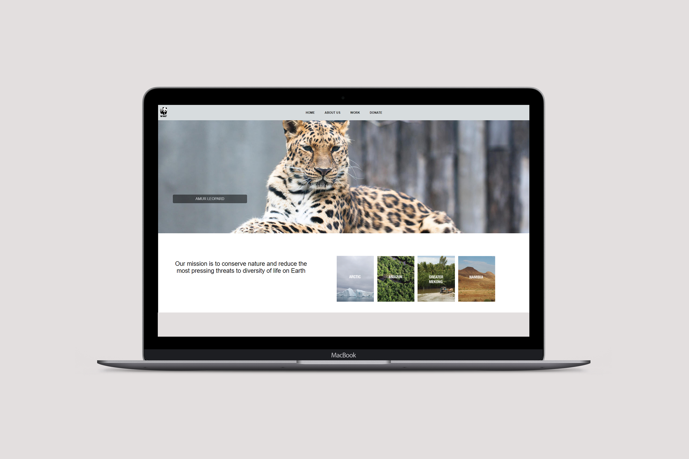
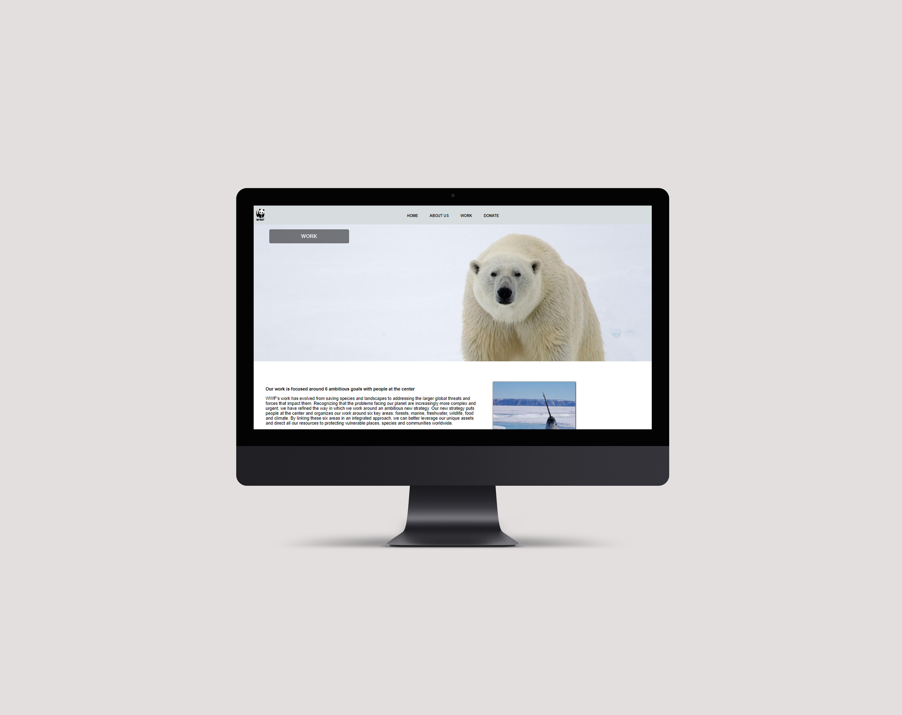
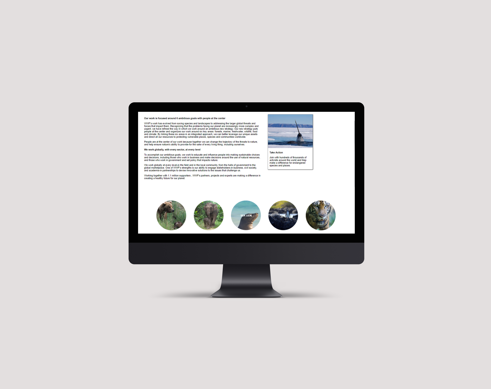
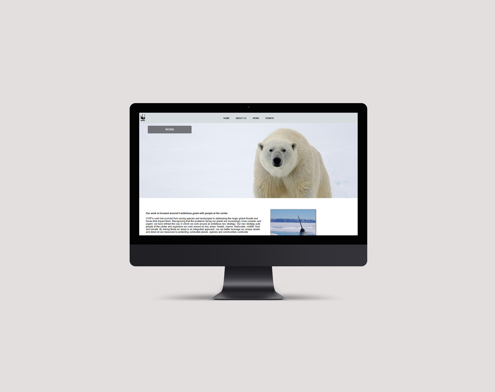
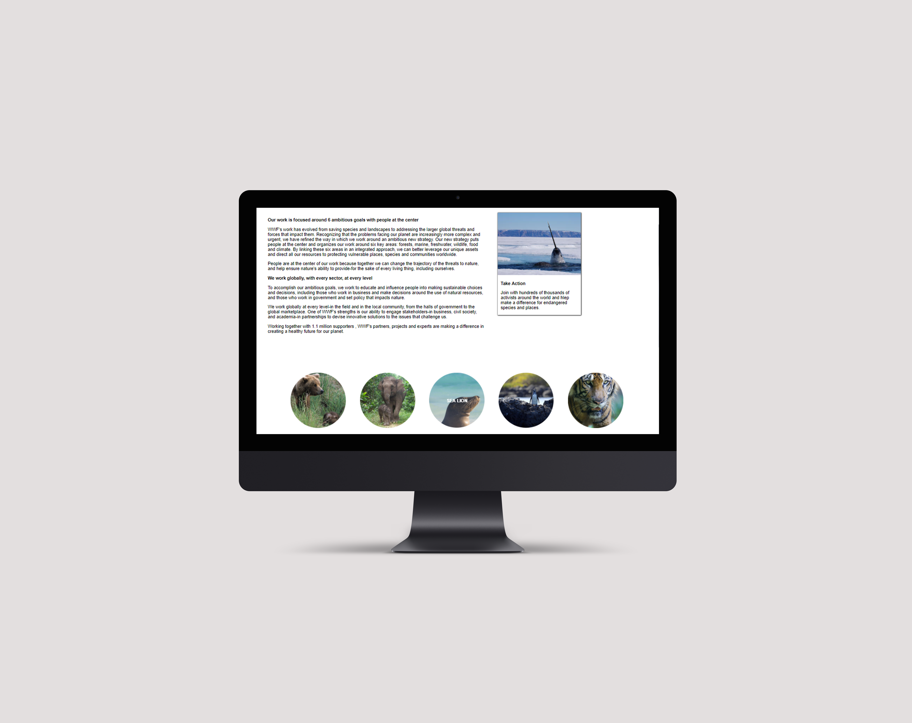

World Wildlife Fund Website

The home page uses a large splash image in order to draw in the users attention to the dangers threatening wildlife animals.
Intro to Web Design
This project was made in an introduction to web design class using only HTML5 and CSS3. I researched current non-profit organizations and found out that the main three pages of their websites were the home page, about us page, and work page. The World Wildlife Fund's mission is to conserve nature and reduce the most pressing threats to diversity of life on Earth. This website was built using just the basics of HTML and CSS such as hover effects, flexbox, and inheritance.
 


